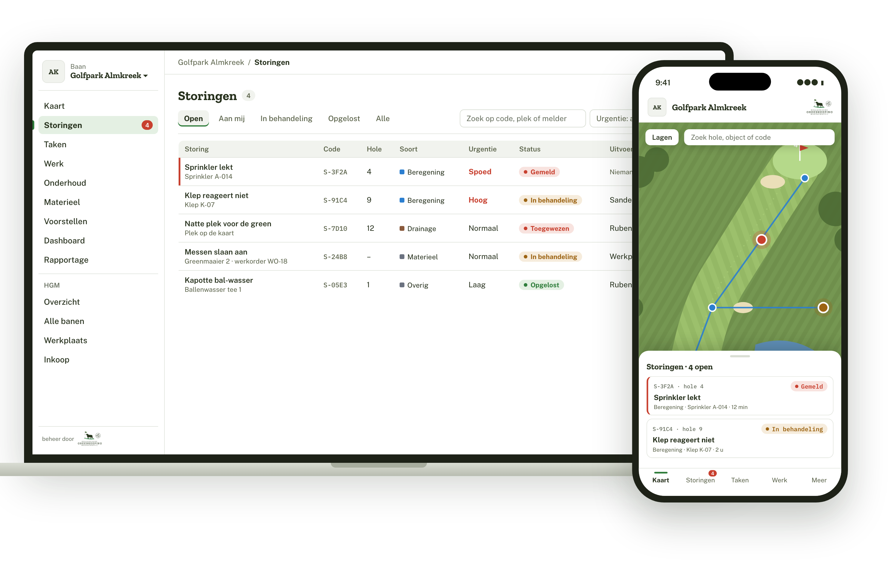

We gaan testen.
Test jij mee?

HGM Golf Onderhoud is ons nieuwe systeem voor al het werk op de banen. Storingen, taken, dagplanning, materieel en werkorders staan straks op één plek: op de kaart van de baan, op de computer en op je telefoon in het veld.
Eerst testen we het in de praktijk. Wat werkt, wat is onhandig, wat mist er nog? Dat horen we graag van jullie.
Wat verandert er voor jou?
1
Melden in drie stappenWaar, wat en hoe dringend, met een foto. Meteen bij de juiste persoon.
2
Je werk voor vandaagDe dagplanning staat klaar op je telefoon. Afvinken als het gedaan is.
3
Alles op de kaartElke sprinkler, klep en leiding, met de hele historie erbij.
4
Machine kapot?Een defect melden wordt meteen een werkorder voor de werkplaats.
Zo gaan we het doen
nuTesten
We beginnen op de proefbaan Golfpark Almkreek, met een kleine groep collega's.
de komende maandenVerbeteren
Jullie feedback verwerken en meer banen en collega's laten meedoen.
medio 2027Op alle banen
Het systeem gaat in productie en iedereen werkt ermee.
Wil je meetesten?
Laat het weten aan je hoofd-greenkeeper of stuur een mailtje. Je hoeft er niets voor te kunnen: als je een telefoon kunt gebruiken, kun je meedoen.